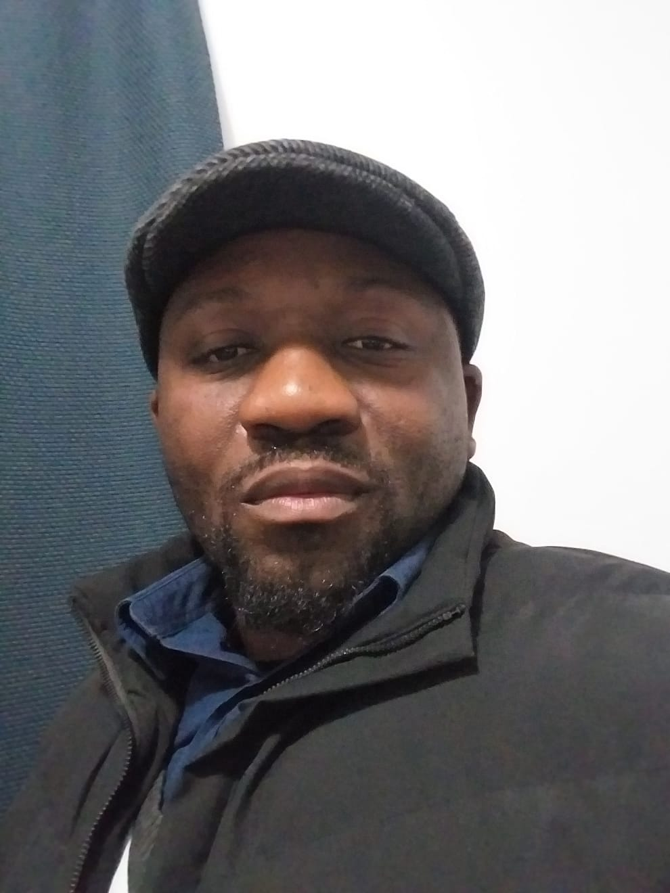

KAHINDO SERGE's Resume

Summary
Hi I'm Serge K, a curious web development enthusiast. Currently honing my skills in front-end and back-end development.
Education & Qualification
2006 - 2008 Coastal KZN FET College
Qualification: National Diploma in Civil Engineering
- Subjects passed N5 & N6: Quantity Surveying, Building & Structural Construction, Building & Structural Surveying and Building Administration
- Subjects passed N4: Quantity Surveying, Building & Structural Construction, Building & Structural Surveying, Building Administration, Mathematics and Engineering Science
- Subjects passed N3: Building & Civil Technology, Building Drawing, Building Science and Mathematics
- Subjects passed N1 & N2: Building Drawing, Building Science, Mathematics and Plumbing Theory
Work Experience
Company Name: Bazi Dukhan Consulting Engineers
Position held: Student Technician
- Responsible for planning and managing field tests
- Required to capture field tests and incorporate these results into a reinforced concrete design of retaining walls and / or pile designs.
- Assist and supervised new trainees.
- Numerous site visits inspecting steelwork for foundations and superstructures.
Skills & Key Competencies
- Advanced Computer skills(Wordm Excel, Power point and Microsoft projects).
- Efficient with AutoCAD
- Intermediate knowledge using Google Sketchup pro
- Experience with Prokon
- Commercial awareness
- Negotiation and Persuasion
- Problem solving
- Efficient with DotPlot (for printing geological soil profile and borehole logs)
Awards and Certifications
- Awarded Fifa certificate during 2010 Fifa World Cup
More